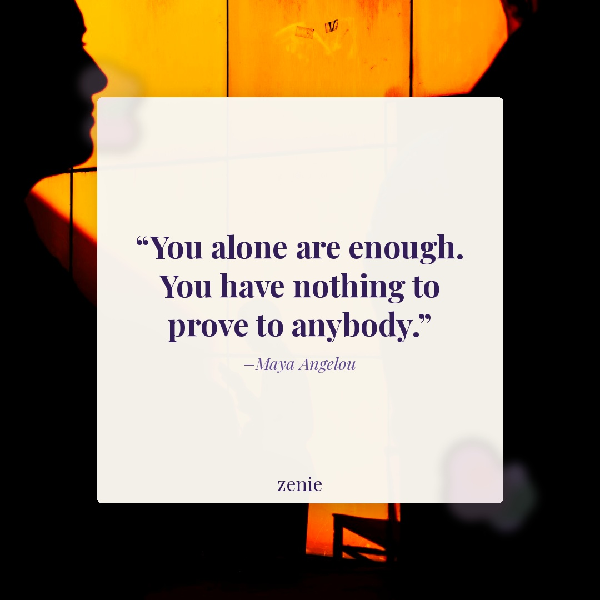
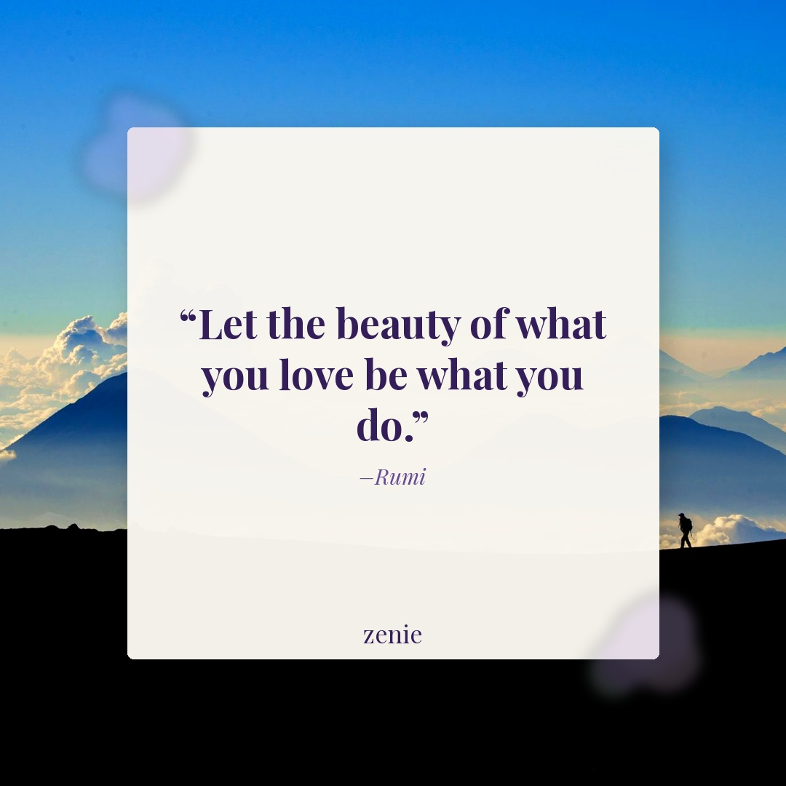

Meme 1
The receipts never lie 👀
Best time: Tuesday 6–8 PM PST
The receipts never lie 👀
Best time: Tuesday 6–8 PM PST
Overlay: When he says he's totally over his ex and then likes all her photos
IG: The receipts never lie 👀
FB: Okay but why does this happen EVERY time? 😅 You deserve someone who's actually moved on. Tag a friend who's been there — she'll know exactly what you mean.
Best time: Tuesday 6–8 PM PST
She KNEW 🤯 Journaling is everything.
Best time: Thursday 7–9 PM PST
Overlay: When your journal entry from 6 months ago predicted exactly how this would end
IG: She KNEW 🤯 Journaling is everything.
FB: Has this ever happened to you? You open an old journal and realize your past self already knew. 🌟 Save this for your journaling bestie — and start a Zenie entry tonight so your future self can be just as stunned.
Best time: Thursday 7–9 PM PST
Creator: @thejournallab ⚠️ UNVERIFIED — confirm creator against the reel before posting
Self-care is the time you give back to yourself — and journaling is one of the most powerful forms of it. ✍️ Save this as your reminder to make that time today. Credit: @thejournallab ⚠️ UNVERIFIED — confirm creator before posting.
Watch ReelBest time: Monday 7–9 PM PST
Creator: @unknown ⚠️ UNVERIFIED — confirm creator against the reel before posting
A little self love, a little self care, and a whole lot of comfort — because you deserve all of it. 🤍 Share this with someone who needs to be reminded to slow down. Credit: ⚠️ UNVERIFIED — confirm creator against the reel before posting.
Watch ReelBest time: Friday 6–8 PM PST
🖼️ Image rendered by GitHub Actions (needs_render: true)

"You alone are enough. You have nothing to prove to anybody." — Maya Angelou
FB: Some days we need a reminder that we don't have to perform, prove, or push harder to be worthy. ✨ You already are. Save this for the next time you forget — and share it with someone who needs to hear it today.
Best time: Wednesday 10 AM–12 PM PST
🖼️ Image rendered by GitHub Actions (needs_render: true)

"Let the beauty of what you love be what you do." — Rumi
FB: When was the last time you did something purely because it fills your soul? 🌸 Rumi said this centuries ago and it still hits. Drop a 💜 if this resonates — and share it with someone who's been putting their passions on hold.
Best time: Saturday 9–11 AM PST